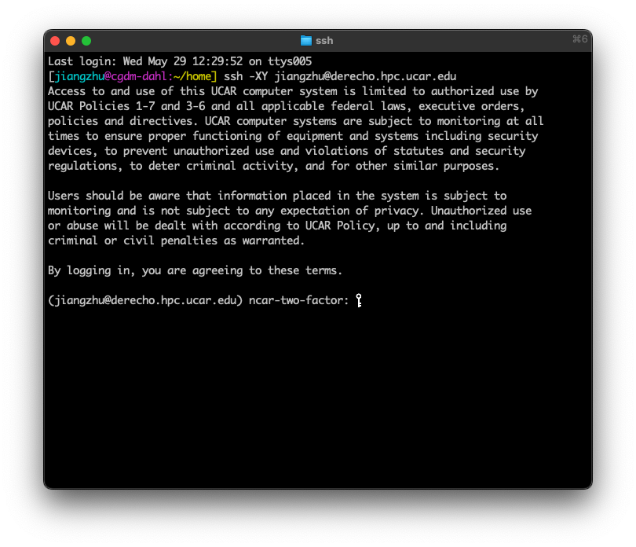

3.5 Challenge: Run an LGM simulations with the Paleoclimate-Calibrated CESM2#
Tutorials at the 2025 paleoCAMP | June 16–June 30, 2025
Jiang Zhu
jiangzhu@ucar.edu
Climate & Global Dynamics Laboratory
NSF National Center for Atmospheric Research
Learning Objectives:
Showcase how a complicated paleo simulation is done.
Still four steps(!), but with more XML and namelist changes to apply the paleoclimate boundary conditions.
Be aware that many efforts went to develop the LGM boundary conditions(not shown here), which may take months.
Reference CESM2-PaleoCalibr LGM simulation
Time to learn: 20 minutes
How to get started?
Use terminal from your system directly
ssh -XY YOUR_SUERNAME@derecho.hpc.ucar.edu
Type in your CIT password (the one you set up with CISL) and approve the DUO push

Create new case#
A long-format compset was used to have more precise control of how I want to run each component
cd /glade/campaign/cesm/development/palwg/cesm_tags/cesm2.1.5/cime/scripts
./create_newcase --case ~/b.e21.B1850.f19_g17.PaleoCalibr.21ka.02 --res f19_g17 --compset 1850_CAM60_CLM50%SP_CICE_POP2_RTM_SGLC_SWAV --run-unsupported
case setup#
I have FORTRAN code changes that need to be put into SourceMods/src.xxx/
I specify how many CPUs to use for each component for a better computation performance
Lots of
xmlchangeto take care of the different land sea distribution due to the lowered sea level at the LGM
cd ~/b.e21.B1850.f19_g17.PaleoCalibr.21ka.02
cp /glade/work/jiangzhu/data/inputdata/cesm2_21ka/gx1v7_overflow SourceMods/src.pop/
cp /glade/work/jiangzhu/data/inputdata/cesm2_21ka/gx1v7_region_ids SourceMods/src.pop/
cp /glade/u/home/jiangzhu/cesm/backup/nimax_limiterA/micro_mg2_0.F90 SourceMods/src.cam/micro_mg2_0.F90
./xmlchange NTASKS_CPL=1024,NTHRDS_CPL=1,ROOTPE_CPL=0
./xmlchange NTASKS_ATM=1024,NTHRDS_ATM=1,ROOTPE_ATM=0
./xmlchange NTASKS_LND=384,NTHRDS_LND=1,ROOTPE_LND=0
./xmlchange NTASKS_GLC=384,NTHRDS_GLC=1,ROOTPE_GLC=0
./xmlchange NTASKS_ROF=384,NTHRDS_ROF=1,ROOTPE_ROF=0
./xmlchange NTASKS_ICE=640,NTHRDS_ICE=1,ROOTPE_ICE=384
./xmlchange NTASKS_OCN=256,NTHRDS_OCN=1,ROOTPE_OCN=1024
./xmlchange NTASKS_WAV=256,NTHRDS_WAV=1,ROOTPE_WAV=1024
./xmlchange RUN_TYPE=startup
./xmlchange GET_REFCASE=FALSE
./xmlchange ATM_DOMAIN_PATH=/glade/work/jiangzhu/data/inputdata/cesm2_21ka
./xmlchange LND_DOMAIN_PATH=/glade/work/jiangzhu/data/inputdata/cesm2_21ka
./xmlchange OCN_DOMAIN_PATH=/glade/work/jiangzhu/data/inputdata/cesm2_21ka
./xmlchange ICE_DOMAIN_PATH=/glade/work/jiangzhu/data/inputdata/cesm2_21ka
./xmlchange ATM_DOMAIN_FILE=domain.lnd.fv19_gx1v7_21ka.200623.nc
./xmlchange LND_DOMAIN_FILE=domain.lnd.fv19_gx1v7_21ka.200623.nc
./xmlchange OCN_DOMAIN_FILE=domain.ocn.fv19_gx1v7_21ka.200623.nc
./xmlchange ICE_DOMAIN_FILE=domain.ocn.fv19_gx1v7_21ka.200623.nc
./xmlchange ATM2OCN_FMAPNAME=/glade/work/jiangzhu/data/inputdata/cesm2_21ka/map_fv19_TO_gx1v7_21ka_aave.200623.nc
./xmlchange ATM2OCN_SMAPNAME=/glade/work/jiangzhu/data/inputdata/cesm2_21ka/map_fv19_TO_gx1v7_21ka_blin.200623.nc
./xmlchange ATM2OCN_VMAPNAME=/glade/work/jiangzhu/data/inputdata/cesm2_21ka/map_fv19_TO_gx1v7_21ka_patc.200623.nc
./xmlchange OCN2ATM_FMAPNAME=/glade/work/jiangzhu/data/inputdata/cesm2_21ka/map_gx1v7_21ka_TO_fv19_aave.200623.nc
./xmlchange OCN2ATM_SMAPNAME=/glade/work/jiangzhu/data/inputdata/cesm2_21ka/map_gx1v7_21ka_TO_fv19_aave.200623.nc
./xmlchange ROF2OCN_FMAPNAME=/glade/work/jiangzhu/data/inputdata/cesm2_21ka/map_r05_nomask_TO_gx1v7_21ka_aave.200623.nc
./xmlchange ROF2OCN_LIQ_RMAPNAME=/glade/work/jiangzhu/data/inputdata/cesm2_21ka/map_r05_TO_gx1v7_21ka_merged_200623.nc
./xmlchange ROF2OCN_ICE_RMAPNAME=/glade/work/jiangzhu/data/inputdata/cesm2_21ka/map_r05_TO_gx1v7_21ka_nnsm_200623.nc
./case.setup
case build#
I usually set up namelist changes before running
case.builduser_nl_cpl: orbital change
orb_iyear = -19050
orb_mode = 'fixed_year'
user_nl_cam: GHG, topography with added ice sheets, and model cloud parameter tuning
bnd_topo = '/glade/work/jiangzhu/data/inputdata/cesm2_21ka/bnd_topo_fv_1.9x2.5_LGM_c200629_nc3000_Nsw084_Nrs016_Co120_Fi001.replaced.nc'
scenario_ghg= 'FIXED'
co2vmr = 190e-6
ch4vmr = 375e-9
n2ovmr = 200e-9
f11vmr = 0.0
f12vmr = 0.0
micro_mg_num_steps = 8
dust_emis_fact = 0.55D0
clubb_gamma_coef = 0.275D0
user_nl_pop changes: ocean bathymetry, land-sea mask, and initial condition
topography_file = '/glade/work/jiangzhu/data/inputdata/cesm2_21ka/topography_21ka_200623.ieeei4'
region_mask_file = '/glade/work/jiangzhu/data/inputdata/cesm2_21ka/region_mask_21ka_200623.ieeei4'
ebm_param_option = 'internal'
init_ts_file = '/glade/work/jiangzhu/data/inputdata/cesm2_21ka/b.e12.B1850C5.f19_g16.i21ka.03.pop.h.0801-0900.climo.ncra.nc'
init_ts_file_fmt = 'nc'
init_ts_option = 'file'
init_iage_init_file = '/glade/work/jiangzhu/data/inputdata/cesm2_21ka/b.e12.B1850C5.f19_g16.i21ka.03.pop.h.0801-0900.climo.ncra.nc'
init_iage_init_file_fmt = 'nc'
init_iage_option = 'file'
overflows_restfile = 'b.e21.B1850.f19_g17.PaleoCalibr.21ka.02.pop.ro'
user_nl_clm: land surface data change to reflect the LGM ice sheets, and remove anthropogenic processes
fsurdat = '/glade/work/jiangzhu/data/inputdata/cesm2_21ka/surfdata_fv19_hist_16pfts_nourb_CMIP6_21ka.c200624.nc'
finidat = '/glade/work/jiangzhu/data/restart/i.e21.I1850C5.f19_g17.21ka.01/i.e21.I1850C5.f19_g17.21ka.01.clm2.r.1401-01-01-00000.nc'
urban_hac='OFF'
calc_human_stress_indices='NONE'
do_harvest=.false.
stream_year_first_urbantv=1850
stream_year_last_urbantv=1850
irrigate=.false.
popdensmapalgo = 'nn'
user_nl_rtm: initial condition for river is being set here
finidat_rtm = '/glade/work/jiangzhu/data/restart/b.e12.B1850C5.f19_g16.i21ka.03/0901-01-01/b.e12.B1850C5.f19_g16.i21ka.03.rtm.r.0901-01-01-00000.nc'
rtm_effvel = 'NULL'
user_nl_cice: bathymetry for the sea ice model, as well as the initial condition
kmt_file = '/glade/work/jiangzhu/data/inputdata/cesm2_21ka/topography_21ka_200623.ieeei4'
ice_ic = 'default'
./case.build
submit job#
The model runs 46 years per wallclock day, so STOP_N=20 works well (20 years can be finished within the limit of JOB_WALLCLOCK_TIME of 12 hours)
./xmlchange STOP_OPTION=nyears,REST_OPTION=nyears
./xmlchange STOP_N=20,REST_N=10
./xmlchange RESUBMIT=4
./xmlchange JOB_WALLCLOCK_TIME=12:00:00
./case.submit